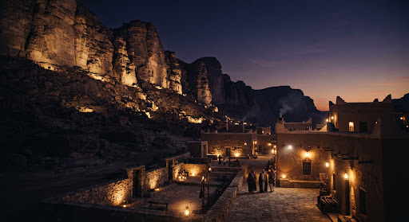
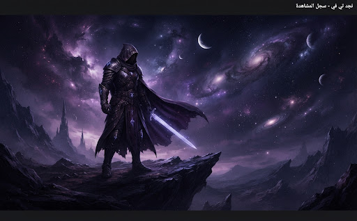
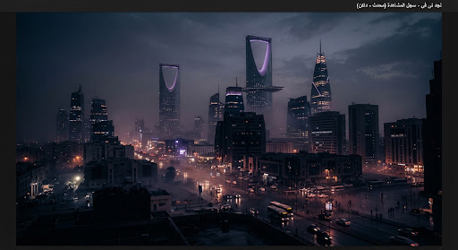

متبقي 18 د
مسلسل درامي
أصداء طويق
الموسم 1 · الحلقة 3
4 أعمال مسجلة مؤخراً

الموسم 1 · الحلقة 3

عمل سينمائي أصلي · ساعتان

الموسم 1 · الحلقة 1
فيلم وثائقي · 52 دقيقة
لم تقم بمشاهدة أي محتوى مؤخراً. تصفح مكتبة الأفلام والمسلسلات للبدء.
سيتم إزالة تقدم المشاهدة لجميع الأعمال المسجلة. لن يؤثر ذلك على قائمة رغباتك (قائمتي) أو التحميلات المحفوظة على جهازك.